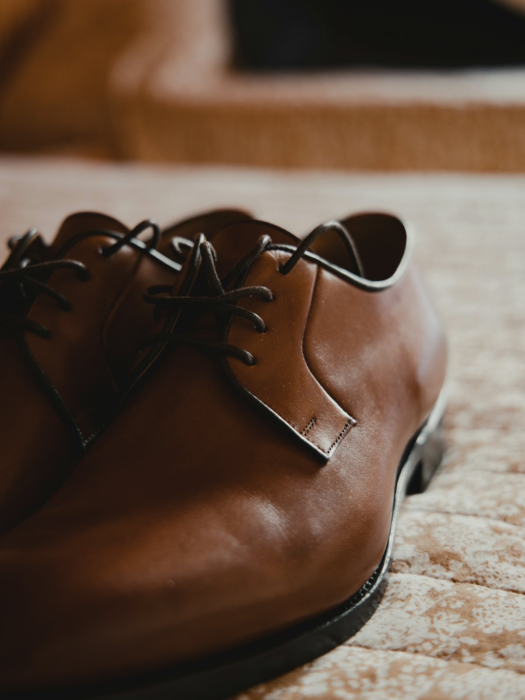
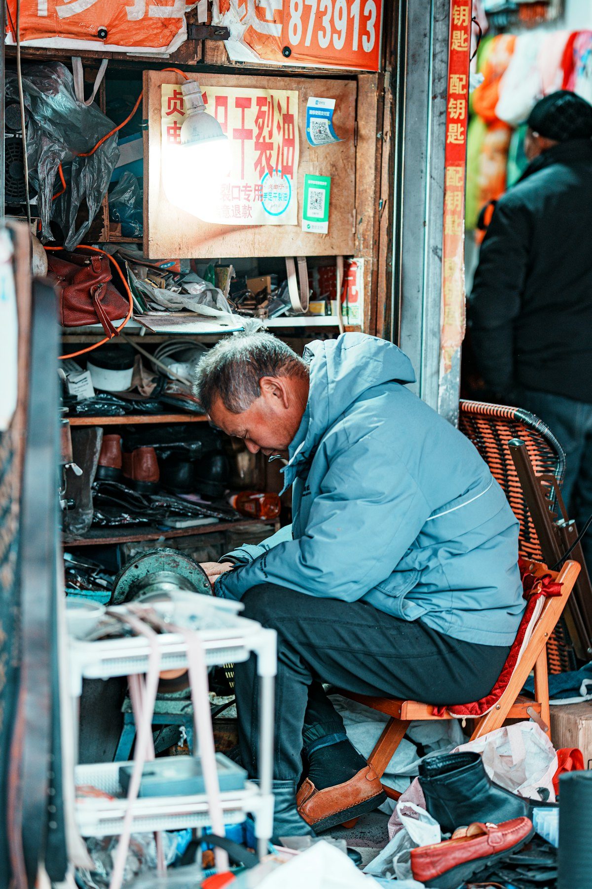

はきよい靴「快歩主義」
軽く、履きやすく、足にやさしくフィット。毎日たくさん歩く方に。
靴 神楽坂二丁目・坂下
明治から三代、神楽坂で靴を商って100年余り。足にやさしくフィットする、はきよい靴をそろえています。
神楽坂は、坂の町。毎日の上り下りがらくになる靴を、坂下の店からご提案します。
画面の上でマウスや指を動かすと、足あとが付きます。
坂下 オザキヤ靴店
坂上
初代・政次郎は腕の良い靴職人で、銀座の老舗靴店の初代と腕前を競い合った仲だったと伝わっています。
二代目、三代目と受け継ぎ、今も神楽坂の坂下で店を開けています。足の形や歩き方をうかがいながら、一足ずつご提案します。

軽く、履きやすく、足にやさしくフィット。毎日たくさん歩く方に。

サイズだけでなく、足の幅や甲の高さも見ながら、合う一足を探します。
…
| 営業時間 | 10:00〜20:00 |
|---|---|
| 定休日 | 日曜 |
在庫やサイズのお問い合わせは、お電話かメールでどうぞ。